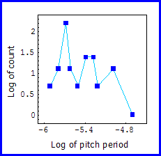

| Here is a table of the MIDI pitch values and respective counts. |
| Recall higher note numbers represent higher frequencies and smaller wavelengths. Therefore we shall think of higher note numbers as smaller elements. |
| Note there is a greater variety of different elements than in our duration scaling examples. |
| Here we have 10 different values for only 33 elements; there are relatively few elements of each size on which to base our analysis. |
| Unlike the duration examples, Table 1 does not show a clear-cut logarithmic relationship between entries in the count column. A log-log plot of the data is even less encouraging. |
|  |
Return to Pitch Scaling.
© 2004 Harlan Brothers